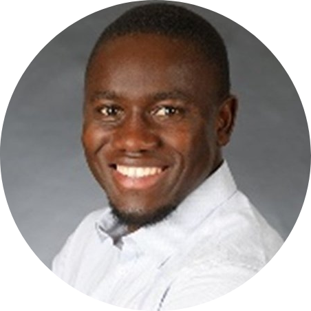

|  | Zack ObegaElektrotechniker, Master - Erneuerbare Energien, Technikingenieur - Fotovoltaik- Sunset Solar I am an Electrical Engineer and a master's Engineer in Renewable Energy |
| 2021-Heute | Technischer Ingenieur bei SUNSET Energietechnik GmbH , Adelsdorf, Deutschland |
| 2019 - 2020 | Masterarbeit in Fraunhofer-Institut für Umwelt-, Sicherheits- und Energietechnik UMSICHT, Oberhausen, Deutschland |
| 2018 - 2018 | Wissenschaftlicher Mitarbeiter in OFFIS- Institut für Informatik, Oldenburg, Deutschland |
| 2014 - 2017 | Elektroingenieur - (Mittel- und Niederspannungsnetze) , National Water and Electricity Company (NAWEC) in Banjul, Gambia |
| PVSol Premium | ⭐⭐⭐⭐⭐ |
| PVsyst | ⭐⭐⭐⭐⭐ |
| Autodesk (AutoCAD) | ⭐⭐⭐⭐⭐ |
| Solid Edge Software | ⭐⭐⭐⭐⭐ |
| 2017 - 2020 | Postgraduate Programme Renewable Energy | Carl von Ossietzky Universität Oldenburg, Deutschland |
| 2009 - 2014 | Elektrotechnik | Universidad Politécnica Territorial del Estado Barinas José Félix Ribas, Barinas , Venezuela |
| 2004 - 2007 | West African Senior School Certificate Examination | St. Peters Technical Junior and Senior Secondary School, Gambia |